Writing can be as easy as chatting on Slack, without getting lost in the next day. Create long-lasting documents without the chaos.
Don’t leave people guessing. Smoothly onboard new employees and keep everyone aligned by sharing what your team values.
Running projects in too many different tools is a recipe for missing important details. Start shipping everything on time.
Focus on the work,
not the tool
Slite is simple for anyone, so no time is wasted omboarding your team or tweaking the tool.
"Slite is so simple that the entire company contributes to knowledge sharing."
Steve Vega, CTO
"We moved all company docs from Google Docs and Confluence to Slite. Now, all departments use Slite and our processes and knowledge are far more organized"
Oleg Campbell, Founder
Finally,
feel organized
Capture everythig in one place, before it gets lost and messy.
Fewer interruptions
Your team’s knowledge is shared by default, and always only a click or search away.
"Slite's accessibility helps to ensure alignment with my internal team."
Emily Dahl, Project Manager
Fit your workflow
Integrations
